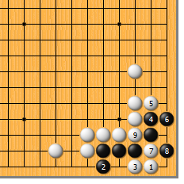
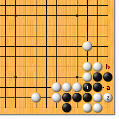
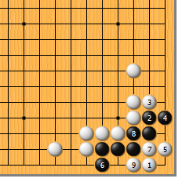
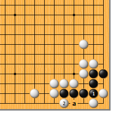
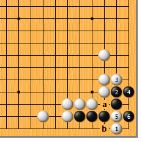
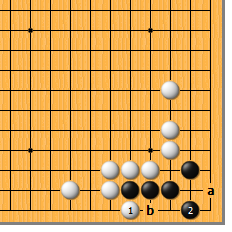
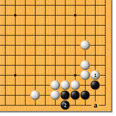

|  |  | |
| 图1 白1点是当然急所。黑2立，白3爬，黑4至6尽量扩大眼位。然而白7拐又是要点！黑8扳则白9断，黑两边不入子而死。
| 图2 前图黑8如走本图1位粘，白2在角上做眼，以后黑a紧气，白b也紧气，成有眼杀瞎。（也是刀把五吧） | |
|  |  | |
图3 白1点时，黑如果先从2位扩大眼位，变化就有所不同。此时，白5尖成了要点！黑6立时，白7团，黑8粘，白9爬，还原到前图。结果虽然一样，内容却大不相同，请好好体会一下。
| 图4 前图黑6如为避免有眼杀瞎而于本图1位挤，白2扳，黑仍不免一死。即使黑a挡，显而易见，角上仍是盘角曲四。 | |
|  |  | |
图5 白1到黑4后，白5如挤，是大恶手。黑6一扳就活了，白如a位紧气，黑b位打吃就行了。行棋次序之重要，由此可见一斑。 | 图6 白1扳，是庸人的俗手。黑2虎，即占据死活的急所。而后白如a位点，黑b位挡，死活无忧。
| |
|  | 您的高见 | |
图7 白1如挡这边，比前图还俗。黑无论是2位立，还是a位虎，都是铁定的活棋。 |